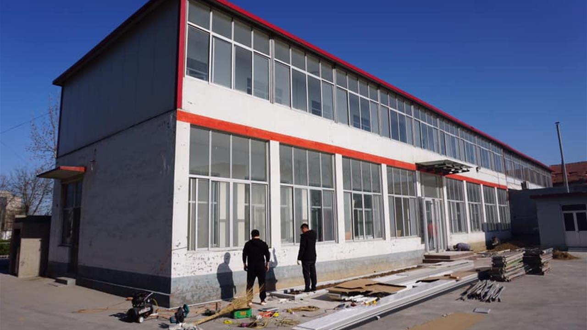
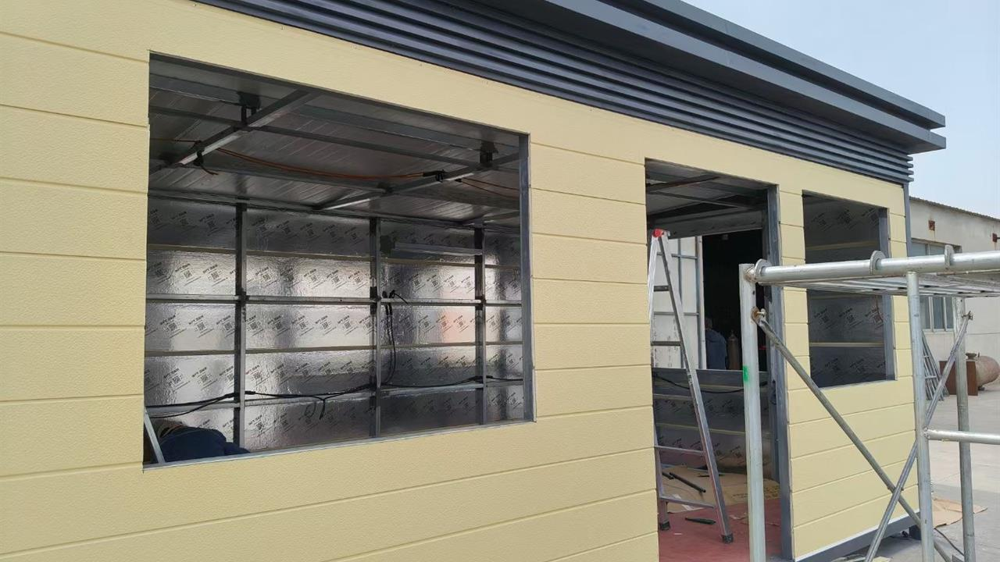
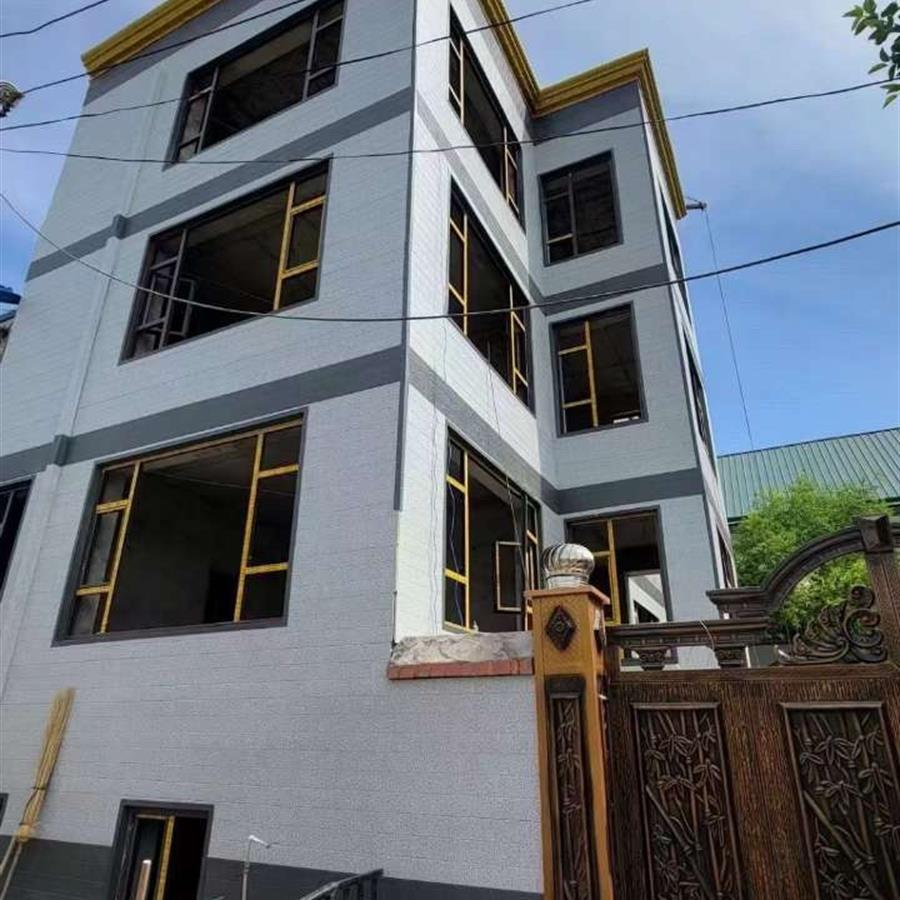

Starter control
Starter trim establishes the first datum and affects all repeated panel courses.
- level baseline
- first panel seating
- cumulative error control
Installation Systems
Installation is treated as a repeatable sequence: measure, plan accessories, establish alignment, seat panels, fix mechanically, close transitions, manage gaps, and inspect before repetition.
The installation system organizes exterior work into predictable field operations. The key engineering value is not speed alone; it is reduced uncertainty at starts, joints, corners, openings, fixing points, and final inspection.
Starter trim establishes the first datum and affects all repeated panel courses.
Panel-to-panel engagement supports consistent facade rhythm and reduces exposed open edges.
Fixing must match substrate, project load, panel position, and manufacturer guidance.
Inspection confirms alignment, fixing, gap treatment, drainage paths, and edge closure.
Use this category as part of a complete exterior system review. Each topic should identify the controlled behavior, the workflow stage, the risk condition, and the verification point.
Define whether the page controls water, heat, load, geometry, surface protection, manufacturing consistency, or site workflow.
Locate the control point in design, production, loading, storage, cutting, installation, or inspection.
Identify joints, corners, openings, cut edges, fasteners, support spans, coatings, packaging, or substrate transitions.
Use drawings, diagrams, site photos, QC images, installation frames, loading records, or final inspection notes.
Practical Workflow
Use installation as a managed process. Each step prepares the next one and reduces corrective work at the end of the facade run.
Confirm wall area, openings, substrate, and panel quantity.
Locate starter, connecting, corner, opening, and finishing profiles.
Align and engage panels before final screw fixing.
Check fixing, drainage, edges, gaps, and facade continuity.
Placeholders for installation visuals that should be produced from real system details.
Show wall substrate, starter profile, panel insertion direction, and level control.
Show panel engagement, screw fixing zone, gap review, and trim relationship.
Technical subpages for detail-level engineering logic, failure conditions, checkpoints, and evidence embedding.
This category should be read as part of the connected exterior system, not as an isolated topic.
Trims establish starts, joints, corners, and closures used by the installation sequence.
Panel seating, overlap direction, drainage paths, and final inspection affect water control.
Handling, cutting, debris removal, and cleaning protect installability before and during fixing.
Future diagrams, installation frames, QC images, and project details should validate this relationship.
Future evidence should document real system behavior. These slots are reserved for technical visuals, not decorative images.

DiagramSystem detail, control layer, sequencing, or load/water/thermal path drawing.

Field FrameInstallation, handling, storage, cutting, cleaning, or inspection photo frame.

QC RecordFactory, packaging, dimensional, surface, or loading verification image.
 Project Detail
Project DetailBuilt facade condition showing corner, opening, trim, drainage, or panel continuity.
Engineering documentation should describe how workflows break, where risk concentrates, and what must be checked before the next step proceeds.
Water control depends on overlap, drainage exits, flashing, drying paths, and sequencing. Do not block intended exits.
Joints, fasteners, trims, openings, cuts, and damaged cores can interrupt insulation continuity.
Metal filings must be removed from coated surfaces and cut edges before moisture exposure.
Wide pallet spacing or uneven supports can deform long panels under their own weight.
Reverse-lap sequencing can direct water behind the cladding instead of outward.
Verify the control point before moving to the next stage: seat, fix, close, drain, clean, inspect.
The workflow is primarily dry mechanical installation, with sealant or foam used only where required for gap treatment.
Steel, wood, cement, and concrete conditions require appropriate tools and fixing methods.
Alignment, panel seating, fixing stability, trim continuity, visible gaps, and drainage paths.
No. Project performance depends on assembly design, substrate, workmanship, climate, and inspection.
Source knowledge and related systems for installation evaluation.